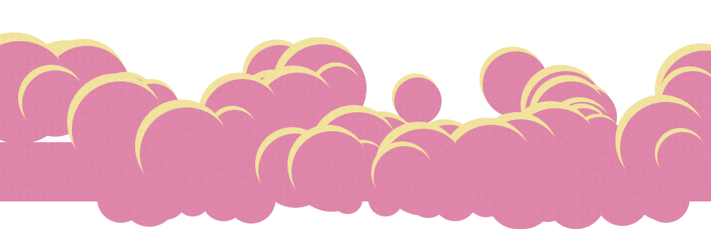

white
đọc gây
mong có nhiều thời gian đọc truyện
để không cần phải nghe audio.


103 chương đã đọc.XEM HIGHLIGHT359 câu chữ
được giữ lại.ĐỌC GHI CHÚ253 lời bên lề,
viết vội lúc đọc.LƯỚT
““Lý Quần Thanh… chuyên gia ngắm chim?”— ?